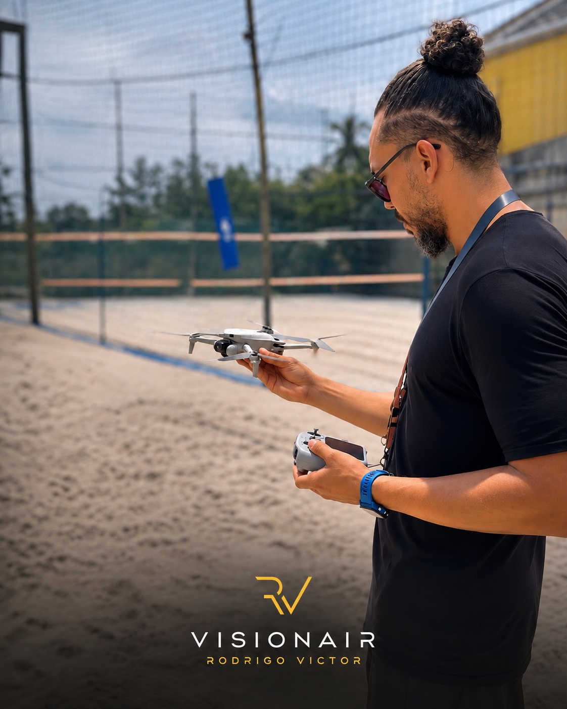
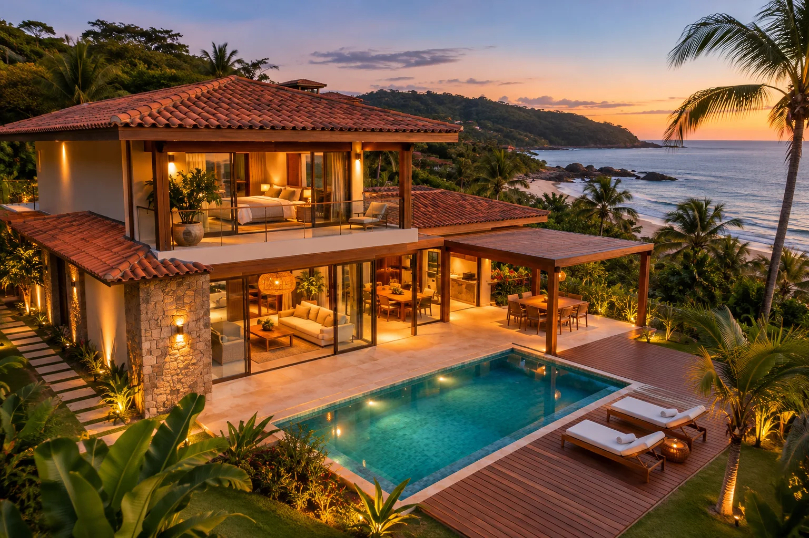
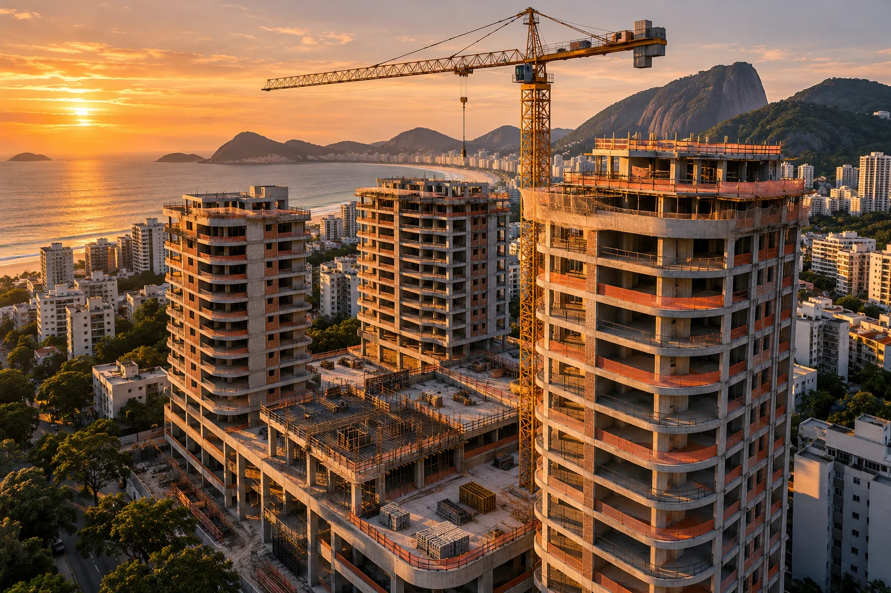
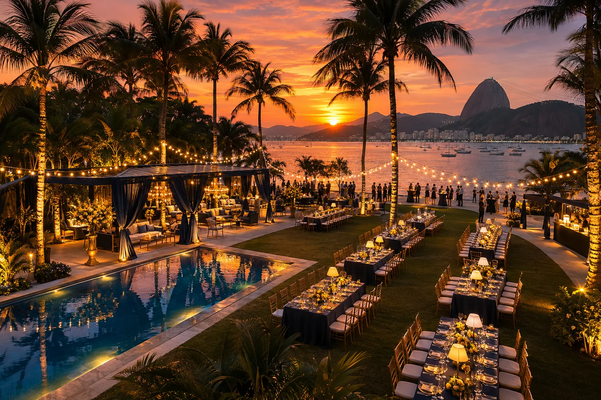
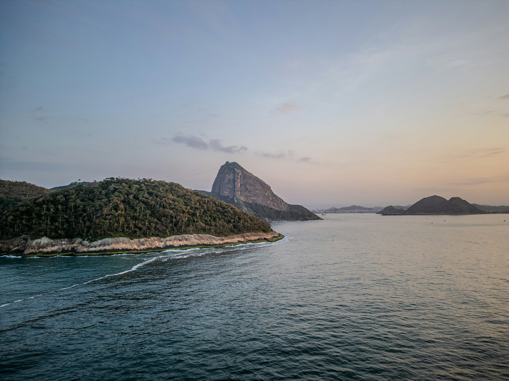
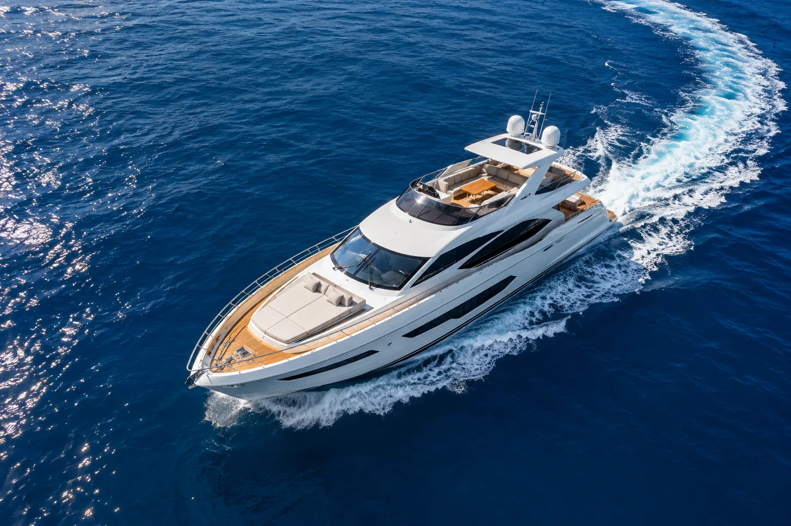

Qualidade de imagem
Captação cuidadosa, enquadramento e atenção aos detalhes.
Produção audiovisual com drone
para projetos, destinos e experiências
extraordinárias.
Sobre a VISIONAIR
A VISIONAIR é a área de produção audiovisual de Rodrigo Victor, dedicada a imagens aéreas e soluções visuais para diferentes segmentos. Um olhar atento para transformar projetos em experiências e mostrar o que cada lugar tem de especial.

Serviços
Cada projeto é único. Por isso, oferecemos soluções personalizadas, com cuidado técnico e estético, para destacar o que realmente importa.

Valorize empreendimentos, imóveis e terrenos.

Registre obras, projetos e a evolução de cada etapa.

Cobertura aérea de eventos sociais, corporativos e esportivos.

Imagens que destacam a beleza e a experiência de cada lugar.

Conteúdos para campanhas, comunicação e projetos especiais.
Portfólio
Um filme da VISIONAIR e uma seleção de publicações do nosso Instagram.
Diferenciais
Captação cuidadosa, enquadramento e atenção aos detalhes.
Análise do local e das condições de voo para o melhor resultado.
Operação responsável, considerando as autorizações aplicáveis.
Soluções sob medida para o objetivo de cada projeto.
Como funciona
Entendemos os objetivos e definimos o formato.
Análise técnica e condições de voo.
Imagens aéreas com enquadramentos cuidadosos.
Tratamento e montagem conforme a proposta.
Material no formato ideal para o seu projeto.
Operação responsável
Produção de imagens aéreas com planejamento, atenção aos detalhes e responsabilidade em cada etapa. Aeronave cadastrada na ANAC para uso não recreativo, na atividade de aerocinematografia.
Cada produção considera as características do local, as condições de operação e as autorizações aplicáveis.
Perguntas frequentes
Produções para imóveis, arquitetura e construção, eventos, turismo e projetos audiovisuais. Conte o objetivo, o local e a data desejada para avaliarmos a proposta.
O prazo varia conforme o volume de captação e a edição. Ele é alinhado antes da contratação e registrado na proposta do projeto.
A VISIONAIR tem base no Rio de Janeiro. Para outras cidades, consulte disponibilidade e condições de deslocamento informando o local do projeto.
Os formatos são definidos conforme o uso: redes sociais, apresentações ou outras aplicações. Podemos planejar versões verticais e horizontais de acordo com a proposta.
Cada local e operação precisam de avaliação prévia. O planejamento considera as condições meteorológicas, as características do espaço e as autorizações aplicáveis.
A edição pode fazer parte da proposta. Informe se precisa de imagens captadas, vídeo editado ou versões específicas para cada canal de divulgação.
Fale com a VISIONAIR